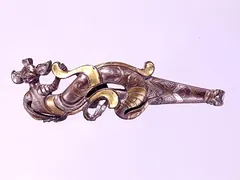

十大雅集 / 丹青造境
VII
丹青造境
传统美术
收录国家级代表性项目 139 项、417 子项，申报地区涉及 32 个省级行政区，另有中直单位申报的 4 子项。子项最多的地区：广东省（32）、江苏省（31）、浙江省（30）。
项目档案库
139 项、417 子项
第 3 / 3 页（VII-121 至 VII-139）
- VII-121

China; Belt hook; Metalwork图：此文件由大都会艺术博物馆作为其项目的一部分捐赠给维基共享资源。请参阅该博物馆的图像和数据资源开放获取政策。 / CC0 / 维基共享资源。本站已缩放裁切。 - VII-122
赏石艺术
- 中国观赏石协会2014 第四批 · 新增项目官方页 →
- VII-123
- VII-124
蒙古族唐卡
- 蒙古族唐卡（马鬃绕线堆绣唐卡）内蒙古自治区阿拉善盟阿拉善左旗2021 第五批 · 新增项目官方页 →
- VII-125
烙画
- 烙画（南阳烙画）河南省南阳市卧龙区2021 第五批 · 新增项目官方页 →
- VII-126
毛绣
- 毛绣（察哈尔毛绣）内蒙古自治区乌兰察布市察哈尔右翼后旗2021 第五批 · 新增项目官方页 →
- VII-127
- VII-128
厦门珠绣
- 福建省厦门市2021 第五批 · 新增项目官方页 →
- VII-129
鲁绣
- 山东省2021 第五批 · 新增项目官方页 →
- VII-130
彝族刺绣
- 彝族刺绣（凉山彝族刺绣）四川省凉山彝族自治州2021 第五批 · 新增项目官方页 →
- VII-131
布依族刺绣
- 贵州省黔西南布依族苗族自治州2021 第五批 · 新增项目官方页 →
- VII-132
藏族刺绣
- 藏族刺绣（贵南藏族刺绣）青海省海南藏族自治州贵南县2021 第五批 · 新增项目官方页 →
- VII-133
哈萨克族刺绣
- 新疆维吾尔自治区昌吉回族自治州木垒哈萨克自治县2021 第五批 · 新增项目官方页 →
- VII-134
水晶雕刻
- 水晶雕刻（东海水晶雕刻）江苏省连云港市东海县2021 第五批 · 新增项目官方页 →
- VII-135
瓷刻
- 瓷刻（大丰瓷刻）江苏省盐城市大丰区2021 第五批 · 新增项目官方页 →
- VII-136
竹根雕
- 竹根雕（象山竹根雕）浙江省宁波市象山县2021 第五批 · 新增项目官方页 →
- VII-137
贝雕
- 贝雕（北海贝雕）广西壮族自治区北海市2021 第五批 · 新增项目官方页 →
- VII-138
骨角雕
- 骨角雕（合浦角雕）广西壮族自治区北海市合浦县2021 第五批 · 新增项目官方页 →
- VII-139
皮艺
- 皮艺（蒙古族皮艺）内蒙古自治区呼和浩特市2021 第五批 · 新增项目官方页 →
名录数据来源：中国非物质文化遗产网